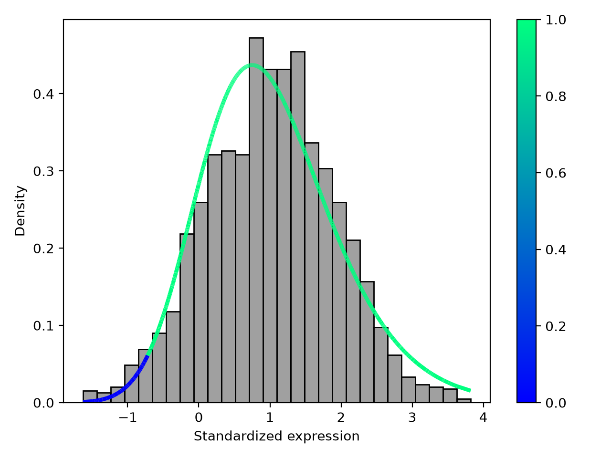
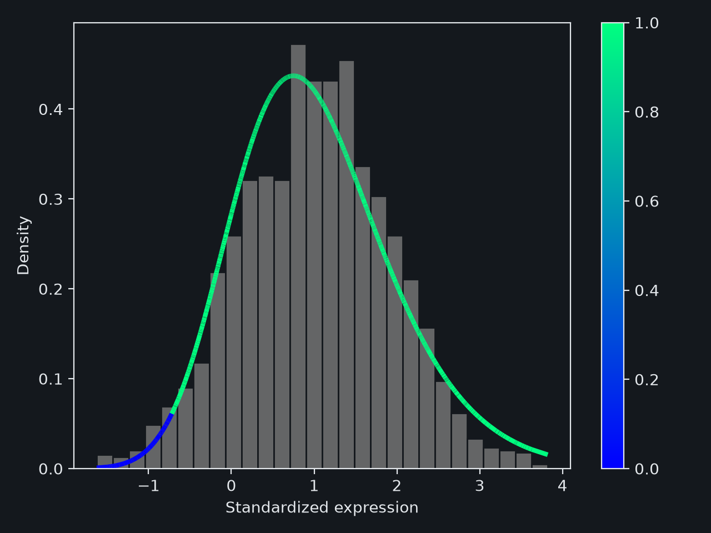

Reading dataset
Creating a project
The first necessary step of every MARADONER session is initiating a project by means of the create command. The command creates a standalone *.init file. The file is portable between machines and is enough to carry out all the other steps of a pipeline. That's also the only step where MARADONER is fed external data. In the simplest case, it is enough to run this command:
> maradoner create MyProject expression.tsv loadings.tsv
Here, MyProject is a custom project name, and all the other steps refer to it. expression.tsv is a table of promoter expression and loadings.tsv is a matrix of motif loadings. Groups of samples and covariates are optional and are passed through options.
The create command is talkative: it reports every promoter, sample and motif it had to drop, with the reason. Its warnings are worth reading before moving on.
Data formats
All tables are plain text files separated by tabs or commas. They can be gzipped.
Promoter expression
A table of $p$ promoters by $s$ samples. Rows are promoters (or genes), columns are samples:
sample_1 sample_2 sample_3 sample_4 chr1:10203-10410 4.21 4.05 6.87 7.02 chr1:95117-95301 0.00 0.13 0.00 0.07 chr2:40018-40260 5.50 5.73 5.61 5.48
The values are expected in a log scale, e.g. log2(TPM + 1). When they look like raw counts, MARADONER prints a warning. Missing and infinite values are an error, as MARADONER does not impute expression.
Motif loadings
A table of $p$ promoters by $m$ motifs. A loading tells how strongly a motif is associated with a promoter. It comes from scanning promoter sequences with the motifs, e.g. the number of predicted binding sites or the score of the best one.
TP53 SP1 GATA1 chr1:10203-10410 3.12 11.80 0.00 chr1:95117-95301 0.00 4.75 6.31 chr2:40018-40260 7.94 9.02 1.15
Rows must use the same promoter names as the expression table. Promoters absent from one of the tables are dropped with a warning.
Several loading matrices can be supplied at once, e.g. obtained with different motif collections:
> maradoner create MyProject expression.tsv hocomoco.tsv jaspar.tsv -p hoc -p jas
Here, the -p (or --loading-postfix) option appends a postfix to the motif names of each matrix, so TP53 of the first one becomes TP53_hoc. Motif names must be unique across the matrices, and postfixes are the way to make them so. Later, the select-motifs command can pick the best variant of each motif.
Sample groups
Samples that are replicates of the same condition form a group. A group has one activity per motif and one pair of variance parameters: the error variance and the multiplier of the activity variance. Groups are passed with the --sample-groups option as either a JSON dictionary
{"control": ["sample_1", "sample_2"], "treated": ["sample_3", "sample_4"]}
or a text file with one group per line, the group name followed by the names of its samples:
control sample_1 sample_2 treated sample_3 sample_4
A sample belongs to one group only. Samples of the expression table that are in no group are dropped with a warning. A sample listed in a group and absent from the expression table is an error, unless the --sample-groups-subset option is given.
Without the option, every sample forms a separate group. That works when samples are many. When they are few, there is too little data for a variance per sample, and fit will say so.
Covariates
Properties of samples such as sex, age or batch are passed with the --covariates option. It takes a table with sample names in the first column and one column per covariate:
sample sex age batch sample_1 F 34 batch_1 sample_2 M 51 batch_1 sample_3 F 47 batch_2 sample_4 M 29 batch_2
The mean activity of a motif then becomes a linear function of the covariates, and export writes a table of effects for each of them. The --formula option chooses columns of the table and adds their interactions, e.g. --formula "age * sex + batch". The rules for the table, an example and the meaning of the effects are in the Covariates section.
Loading transformations
Raw scores of different motifs are on different scales. Before the loadings are stored in the project, each column of a loading matrix is transformed. The transformation is chosen with the --loading-transform (or -t) option:
| Name | Description |
|---|---|
esf |
(Default) A score is replaced with the negative logarithm of the empirical survival function, i.e. of the share of promoters with a greater score of the same motif. |
ecdf |
A score is replaced with the empirical CDF: the share of promoters with a score not greater than it. |
scale |
Each column is rescaled to the $[0, 1]$ range. |
none |
Loadings are taken as they are. |
drist |
MARADONER attempts to find an optimal monotone transformation of each column: it explains the expression best. The project keeps the scores as they are, and fit finds the transformation on the training promoters only, so that held-out promoters take no part in it. This takes a while. |
dristun |
The same as drist with one transformation shared by all motifs. |
With esf and ecdf, a loading depends only on the rank of a promoter among the others. With several loading matrices, either one transformation is given for all of them, or the option is repeated once per matrix.
esf or ecdf, and MARADONER drops such motifs. For tables of that kind, none or scale is the choice.
Motifs whose loadings are the same for all kept promoters carry no information and are dropped with a warning, whatever the transformation is.
Filters
Promoters silent in all samples tell nothing about motif activities, and create removes them. To this end, a mixture of 2 distributions is fitted to the expression of promoters: one component for the silent promoters and one for the expressed. A promoter is dropped if its posterior probability of being silent exceeds a threshold. The related options are:
| Name | Description | Default value |
|---|---|---|
--filter-lowexp-w <float> |
The threshold on the probability of being silent. The closer it is to 1, the more promoters are left in the dataset, and 1 disables the filter | 0.9 |
--no-filter-max-mode |
By default, the mixture is fitted to the maximal expression of a promoter over samples, so promoters active at least in some samples are kept. With this option, a Gaussian mixture is fitted to the average expression instead | --filter-max-mode |
--no-filter-plot |
Disables the plot of the expression with the fitted mixture, saved as {ProjectName}.filter-plot.png | --filter-plot |
The plot is worth a look after each create run:




This one is from synthetic data with no silent promoters, hence a single peak and a short blue tail. On real data we expect 2 peaks, with the left one painted blue.
MARADONER skips the filter and says so when the mixture can't do the job: when there are fewer than 10 promoters, or when the fitted silent component holds more than 60% of them.
Other options
There are extra options that can be of potential interest:
| Name | Description | Default value |
|---|---|---|
--motif-filename <path> |
Only motifs listed in this file are kept. Names are separated by whitespace and are matched after the postfixes have been appended | None |
--motif-expression <path> |
A table of motif expression in a log2 scale, one per loading matrix. It is stored in the project, and no estimator uses it at the moment | None |
--n-jobs <float> |
Number of threads for reading the tables. -1 stands for all threads, a fraction between 0 and 1 for that share of them | 0.5 |
--compression <str> |
All MARADONER project files can be compressed with lzma, gzip or bz2 to reduce the volume they occupy on a disk. Each time MARADONER reads or writes such a file, it has to compress or decompress the data, and that takes time for huge datasets |
raw |